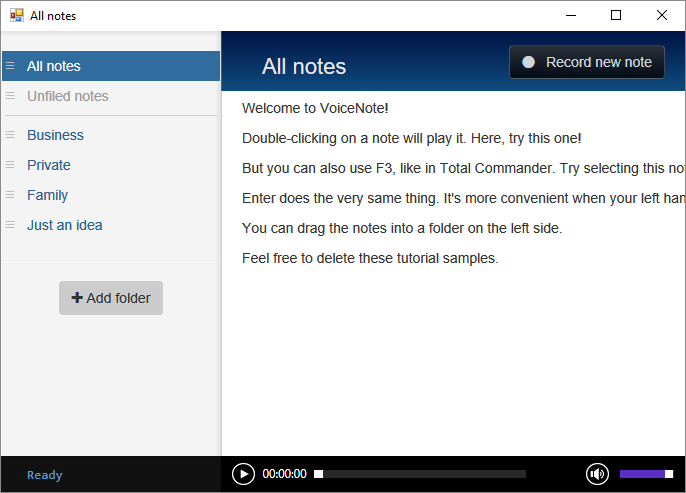

What's this all about?
Scriptonit is a tool that you can use to create a Windows EXE with all the skills you already have from web programming. That is, if you know what HTML is and you speak some Javascript, you'll have no problems to implement whatever's in your mind and it will all look like a standard exe application. Behind the scenes it will run in a browser (Edge) but noone will actually realize that if you don't want them to. Your window will look like any other OS-created window; you can even minimize or resize it programmatically. You can run shell commands and capture their output, access the local filesystem, interact with the user, display the progress of something running in the background, etc - and all you have to do is write a few lines of JS code. Scriptonit will take care of the rest.
If you prefer learning by example, jump right to the Hello World example!
Demo projects
There are a bunch of demo projects, they come with the original Scriptonit package. You can use them as a starting point to create your own awesome little applications. They represent different levels; HelloWorld is the simplest, obviously. CheatSheet is relatively simple too, it's nothing but a document display with some fancy tabs, thank you Bootstrap 3.
Then there's a demo app called FolderSizes, this one's a bit trickier: it makes some use of shell output capturing, and gives you a nice little tool to calculate the occupied disk space for your folders. It doesn't make use of the listing functions in the file interface so you can see the long-operation control in action.
And finally, here on the right side, there's VoiceNote which is a full-featured product written in Scriptonit, only to show off demonstrate the possibilities. Also it's the one that finally utilizes the audio interface, which only has one call and is a complete mystery to anyone who never worked with MCI strings.
Have fun with Scriptonit!
This thing is fun. Don't deny it. Please feel free to create your own tools, it's a lot better than just creating batches for yourself, while still almost as easy. If you produce something absolutely breathtaking, make sure you share it with me and maybe in the next release it will be a demo app included in the official package! Or, you can just sell it as a product. Whichever way you go - good luck!